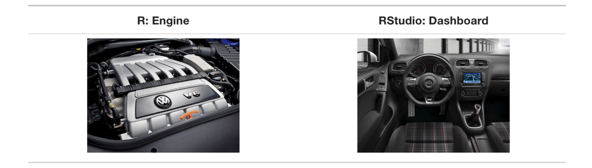
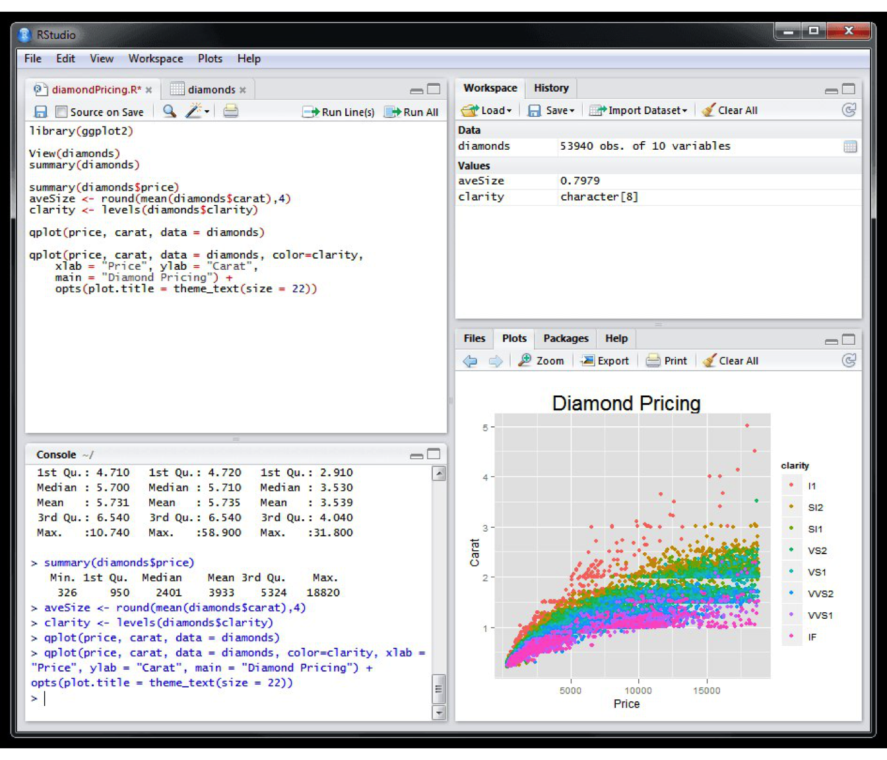
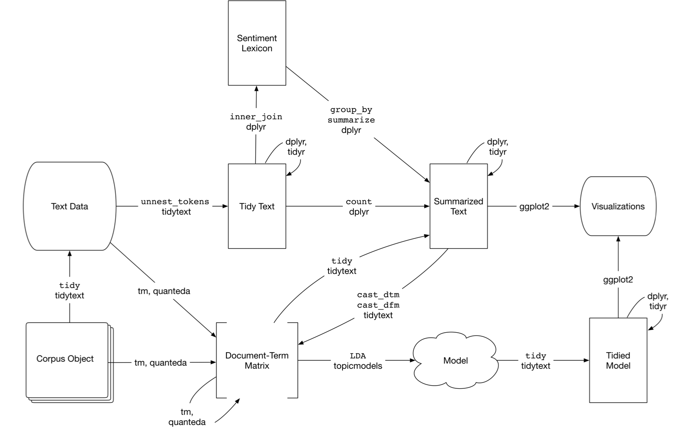

Capítulo 1 Introdução
1.1 O R e o RStudio
Com o objetivo de ser um tutorial prático de uso e aplicação de técnicas e métodos de análise automatizada de conteúdo para ciências sociais e humanidades este livro fará uso da linguagem R.
R é uma linguagem de programação e também um ambiente de desenvolvimento integrado
para cálculos estatísticos e gráficos. Ele pode ser facilmente instalado através do link: https://cran.r-project.org/.
Para auxiliar no desenvolvimento das análises, este livro incentiva o uso do RStudio. Trata-se de um software livre de ambiente de desenvolvimento integrado (IDE) para o R1.
De forma ilustrativa, o R e o RStudio operam como a figura abaixo:

Com o RStudio, você estará diante do seguinte dashboard:

Se está começando a usar o R para análise de dados, recomendo o seguinte material:
Em caso de dúvidas, use e abuse de fóruns como o Stackoverflow. Para aprimorar seu código e otimizar o desenvolvimento de suas análises, os guias de estilo do Google e do RStudio são ótimas referências.
1.2 O Pacote txt4cs e outros

Este livro conta com o pacote txt4cs. Ele traz consigo funções específicas e bases de dados utilizadas nos exemplos apresentados. Um dos acervos de exemplo se refere ao conteúdo proferido em 17 de abril de 2016, dia de aprovação do impeachment da então Presidenta Dilma Rousseff na Câmara dos Deputados.
Figure 1.1: Fonte: Empresa Brasil de Comunicação - EBC
Para instalação, use os comandos abaixo:
if(require(devtools) == F) install.packages('devtools'); require(devtools);
devtools::install_github("davi-moreira/txt4cs-pkg")
require(txt4cs)Ademais, os seguintes pacotes são essenciais para o desenvolvimento da análise automatizada de conteúdo com o R. Conforme forem necessários, serão apresentados no livro.
1.3 Material de apoio
Este livro não é feito do zero e resulta de inspiração em diferentes fontes. As principais são:
1.3.1 Referências para processamento de sequências de caracteres com o R
1.3.2 Referências em análise de conteúdo com o R:
IDE, do inglês Integrated Development Environment, é um programa de computador que reúne características e ferramentas de apoio ao desenvolvimento de software com o objetivo de agilizar este processo.↩